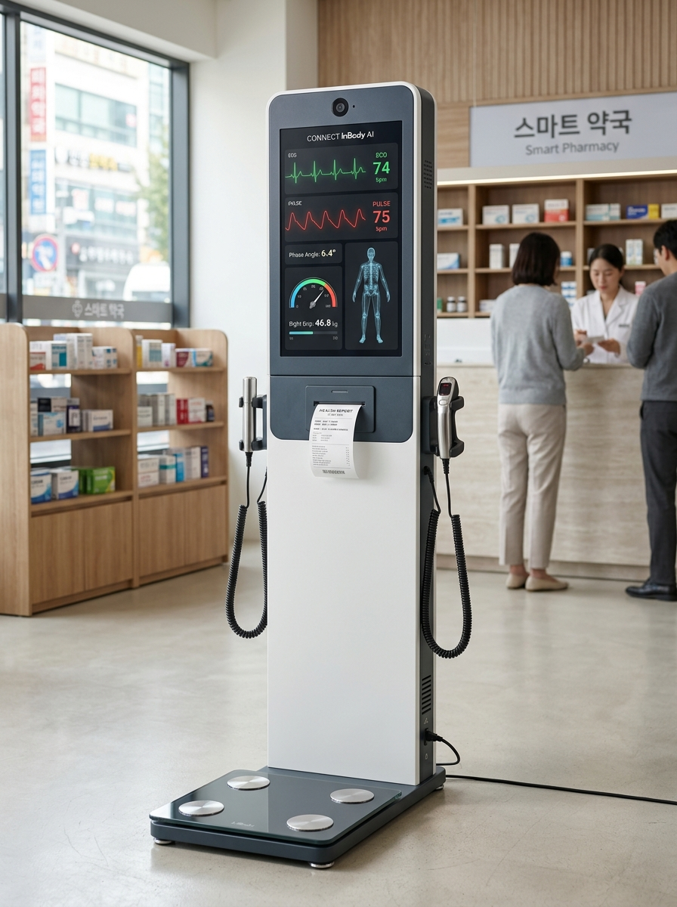
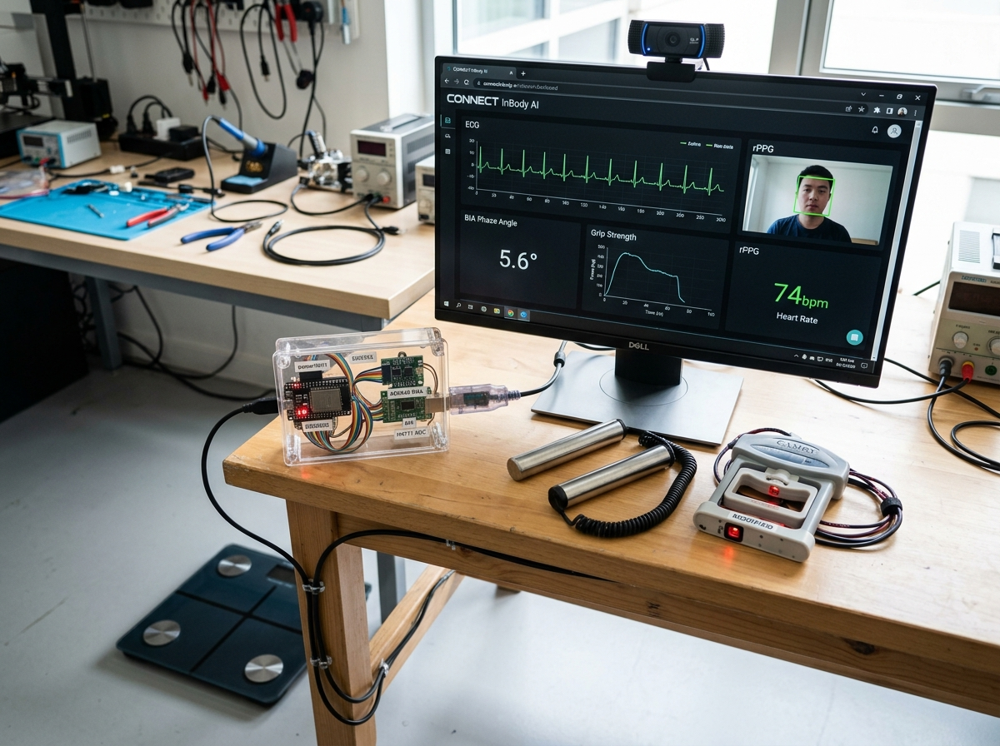
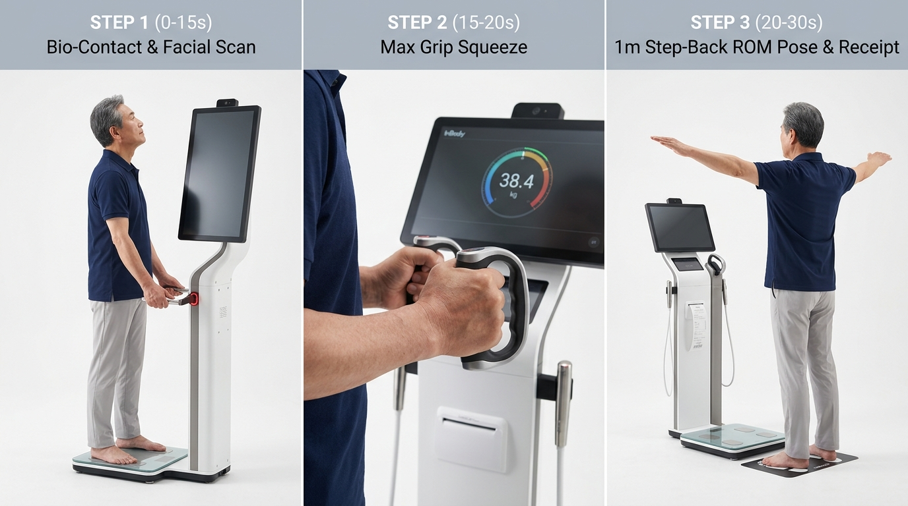

실시간 `CONNECT InBody AI` 헬스뷰어 시뮬레이터
약국(건기식 소분 상담), 마이파크 매장(파크골프 스윙·체형 처방), 기업/스마트경로당(RULA·치매·낙상 선별) 3대 모드를 실시간 체험하세요.
김커넥트 님 (64세, 남) — 5대 생체·기능 정밀 분석 결과
'카르나 AI 헬스뷰어 (온유헬스뷰어)' 정밀 역설계 및 기술적 실체
약국·복지관 시장을 빠르게 침투한 비결(세일즈 퍼널 UX)과 하드웨어 내부의 치명적 한계(양자공명 QRMA 의사과학 논란)를 객관적으로 해부합니다.
약국 '맞춤형 건기식 소분 판매'에 최적화된 상담 브릿지
-
01
객관적 수치 기반 세일즈 훅(Sales Hook): 약사가 말로만 영양제를 권유할 때 발생하는 소비자의 방어기제를 "AI 측정 리포트에서 비타민B군·마그네슘·혈관탄성 지표가 주의 단계로 나왔다"는 시각 자료로 돌파합니다.
-
02
생성형 AI(ChatGPT/SLM) + 신호등 결과지 + 알림톡: 측정 직후 3~5초 내 생성형 AI 요약 코멘트와 신호등(정상/주의/관리) 인포그래픽을 종이로 인쇄하고 카카오톡 알림톡으로 발송하여 3개월 건기식 정기 구독을 유도합니다.
-
03
식약처 규제 회피(비의료 웰니스 포지셔닝): '질병 진단' 대신 '웰니스 영양 균형 참고 지표'로 표현하여 의료기기법 충돌을 피하고, 공공기관 납품 시에는 GS인증 1등급(SW 품질인증)으로 공신력을 대체합니다.
양자공명(QRMA) 핸드스틱의 회로 실체와 커넥트의 정통 돌파법
단일 금속 봉을 쥐어 비타민·미네랄·간/신장/위장 기능 등 250~300가지 생화학 지표를 측정한다는 QRMA 회로 내부에는 양자 센서나 자기공명 소자가 전혀 없습니다. 저가 MCU와 NE555 타이머/LM324 Op-Amp로 단순 피부 접촉 여부만 감지한 뒤, 사전 입력한 나이·성별·키·몸무게 통계 테이블에 난수 편차를 주어 250개 더미 수치를 생성하기 때문에 1분 뒤 재측정 시 수치가 뒤바뀌는 재현성 결여 문제를 안고 있습니다.
의사과학 논란을 원천 차단하기 위해 글로벌 의료·계측 반도체 1위 기업인 Analog Devices의 AD5940(다주파수 BIA 세포막 위상각·체수분) + MAX86150(동기화 심전도 ECG + 광학 PPG 산소포화도·맥파전달시간 PTT 혈압) + HX711(디지털 악력계)를 탑재하여, 의사와 약사 누가 검증해도 100% 재현되는 진짜 바이오마커만 출력합니다.
국내외 비침습 AI 헬스체크 기기 14종 & 5대 차세대 바이오마커 전수 조사
글로벌 FDA 승인 rPPG 솔루션부터 체성분·근골격 비전·시선/음성 치매 선별·당독소(AGEs) 광학 리더까지 커넥트 기기에 탑재할 핵심 기술을 도출했습니다.
| 카테고리 | 기업 / 제품명 | 핵심 측정 원리 및 추출 지표 | 인허가 / 정확도 검증 | 커넥트(`CONNECT InBody AI`) 도입 전략 |
|---|---|---|---|---|
| 안면 rPPG 스마트미러 | NuraLogix Anura MagicMirror |
경피광학이미징(TOI™) 30초 스캔: HR, HRV, 혈압 추정, HbA1c(>5.7%)·공복혈당·10년 심혈관 위험도 등 100+ 지표 | 미국 FDA 510(k) (HR/RR), 당뇨 위험 선별 AUC > 0.80 | 혈액 채취 없이 비침습 광학 신호 + 생체통계 모델로 대사질환 위험 확률(%)을 합법적으로 제시하는 구조 채택 |
| 온디바이스 rPPG + rBCG | FaceHeart & Shen.AI Vitals™ / Cordaica |
안면 색상 변화(rPPG) + 심장박동에 의한 미세 두부 진동(rBCG) 결합으로 HR, RR, BP, SpO2, HRV 추출 | FaceHeart 미국 FDA Class II 2건 승인(K223622, K243966) | 매장·약국의 조명 변화 노이즈를 극복하기 위해 rPPG + 미세 머리 움직임(rBCG) 앙상블 알고리즘 적용 |
| 국내 식약처 rPPG | 딥메디 (deepMedi) 딥체크 키오스크 |
카메라 안면 혈류역학 딥러닝 파형 분석: 수축기/이완기 혈압, 맥박, 부정맥 스크리닝, 스트레스, 혈관건강 | 국내 식약처(MFDS) 2등급 디지털의료기기(SaMD) 허가 | 국내 식약처 2등급 카메라 혈압·맥파 인허가 경로 벤치마킹 및 산업안전 근로자 건강관리 키오스크 UI 참조 |
| AI 근골격·체형 비전 | 에버엑스 (`Mora Vu`) & 엑스바디 (`Exbody`) | 일반 RGB 카메라 24개+ 관절 추정(오차 ±3° 이내 어깨·무릎 ROM, 거북목, 골반경사) 및 과활성/약화 근육 3D 아바타 시각화 | 에버엑스 식약처 의료기기 허가, 정형외과·도수치료 표준 | 추가 3D 카메라 원가($0) 없이 커넥트 기보유 3D Pose + RULA 엔진으로 30초 전신 체형·어깨 ROM·하체 근력 분석 기본 탑재 |
| 체성분·세포영양·악력 | 인바디 (InBody) InBody Touch / BWA / InGrip |
다주파수 BIA 기반 50kHz 세포막 위상각(Phase Angle), 세포외수분비(ECW 부종) + 디지털 악력계(`InGrip`) 근감소증 진단 | 글로벌 BIA 표준 (DEXA 상관도 r=0.98), 근감소증 진단 표준 | 카르나의 허구적 세포활력을 50kHz 위상각(Phase Angle)으로 대체하고, 핸드스틱에 디지털 악력 로드셀을 내장해 근감소증 1차 판정 |
| 멀티센서 스테이션 | Withings `Body Scan` & `Higi Station` | 8전극 BIA + 6유도 심전도(ECG) + 맥파전달속도(PWV 혈관나이) + 발바닥 땀샘 전도도(당뇨 말초신경 점수) / Higi 착석형 약국 스테이션 | 미국 FDA / 유럽 CE 승인, 북미 약국 10,000대 설치 | 핸드스틱+발판 접촉 30초 동안 BIA + ECG + PPG(PTT 혈압/혈관나이) + EDA(말초 교감신경)를 동시 추출하는 하드웨어 설계 |
| 시선·음성 치매/뇌피로 | 비주얼캠프 (`SeeSo`) & 보이노시스 (`VoiceCheck`) | 전면 카메라 안구운동(Saccade/Anti-saccade 잠복기) + 20초 음성 발화(성대 떨림 Jitter/Shimmer·휴지 구간) 기반 경도인지장애(MCI) 선별 | 대학병원 임상 검증 (MCI 선별 AUC 0.85~0.90) | 추가 HW 비용 없이 카메라 홍채 추적(MediaPipe Iris)과 마이크로 30초 치매·뇌피로·우울 스크리닝 구현 (뇌 영양제 매칭 직결) |
| 광학 대사노화(당독소) | Diagnoptics / Sharp AGE Reader (SAF) |
UV-A(370nm) 광원 조사 후 피부 진피층 자가형광(420~600nm) 강도 비율로 체내 누적 최종당화산물(AGEs, 당독소) 12초 비침습 측정 | 피부 생검 대비 SCI 논문 수백 편 입증 (당뇨합병증·혈관노화) | 고급형 약국 모델에 UV-A 당독소 광학 센서 옵션을 제공하여 항산화제(글루타치온·알파리포산·코엔자임Q10)·혈당 건기식 전환율 극대화 |
커넥트 기존 IP 자산 이식 & 스마일스퀘어 '마이파크' 전국 거점 O2O 전략
단품 키오스크 제조사는 절대 따라올 수 없는 전국 스크린 파크골프(마이파크) 오프라인 거점 + 5080 시니어 동적 운동기록(PSR) + 약국 정적 건강기록(PHR) 결합 생태계입니다.
1,800fps 3D 모션 캡처 & RULA 생체역학 엔진
주식회사 커넥트가 과기정통부·RAPA 16억 원 가상융합 프로젝트 및 산업안전 AX에서 이미 구축한 3D Pose Estimation, 척추축(Spine Axis)·좌우 하중 밸런스 분석, ISO 11226 / RULA 근골격 부하 평가 엔진, 이종 센서 시계열 정합(Time-Sync), 온디바이스 비식별화 및 sLLM+RAG 파이프라인을 추가 R&D 비용 없이 헬스뷰어에 100% 즉시 이식합니다.
Check-to-Play & Play-to-Care 양방향 O2O
마이파크의 핵심 고객층인 50~80대 액티브 시니어(평일 주간 10~17시 동호회·정기 예약 중심, 1인 18홀 7,000원)는 약국 건강기능식품의 최대 구매층과 100% 일치합니다. 심평원 약국·병의원 POI 공공데이터로 매장 반경 1km 내 제휴 약국을 자동 매칭합니다.
공식 앱 통합 & 나라장터 1,980만 원 수의계약
마이파크 공식 모바일 앱(QR 간편 로그인 및 단일 '대표 매장' 순위 일원화 시스템)에 건강 리포트를 통합하여 별도 앱 설치 장벽을 없애고, 주식회사 커넥트 단독 명의 조달 체계로 공공 시장을 공략합니다.
해외 GitHub 오픈소스 레포지토리 & 임상급 바이오센서 AFE 칩셋 BOM 계산기
바닥부터 개발하지 않고 즉시 상용 이식이 가능한 글로벌 검증 GitHub 코드베이스와 Analog Devices / TI 바이오센서 칩셋 단가(BOM)입니다.
핵심 GitHub 오픈소스 & 임베디드 라이브러리 10선 클릭 시 GitHub 이동
| 모듈 영역 | GitHub 레포지토리 | 핵심 알고리즘 / 역할 | 난이도 (기간) |
|---|---|---|---|
| 딥러닝 rPPG | ubicomplab/rPPG-Toolbox | 워싱턴대 표준 프레임워크 (TS-CAN, PhysFormer, DeepPhys 사전학습 가중치 & ONNX 변환) |
중 (1.5개월) |
| 신호처리 rPPG | phuselab/pyVHR | MediaPipe 468점 패치 추출 + POS, CHROM 무감독 실시간 CPU 맥파 추출 및 SQI 필터 |
하 (3주) |
| 경량 ONNX rPPG | KegangWangCCNU/open-rppg | 시공간 상태공간 네트워크(TS-SSM) 기반 초경량 실시간 BVP 추출 (웹/미니PC 겸용) | 하~중 (3주) |
| 상용 C++ SDK | Presage-Security/SmartSpectra | C++/모바일 실시간 심박·호흡수·신호품질(Quality Control) 레퍼런스 SDK | 하 (2~3주) |
| HRV·PTT 생체신호 | neuropsychology/NeuroKit2 | ECG R-피크 & PPG 피크 정합, SDNN, RMSSD, LF/HF 자율신경 및 맥파전달시간(PTT) 산출 |
하 (2주) |
| 3D 포즈 & ROM | davidpagnon/Sports2D & rtmlib | ONNX 기반 CPU 60fps+ 전신 133점 추론 및 OneEuro 필터 기반 실시간 관절 각도(°) 자동 계측 | 하 (2~3주) |
| 시선추적 인지검사 | MediaPipe Iris & WebGazer | 홍채 10점 실시간 추적 → Pro/Anti-Saccade 안구 도약 잠복기(ms) 기반 전두엽 MCI 선별 | 중 (1.5개월) |
| BIA·ECG·악력 FW | ad5940lib / MAX86150 / HX711 | AD5940 4전극 다주파수 BIA/위상각 C 드라이버, MAX86150 동기화 ECG+PPG, HX711 로드셀 악력 |
중~상 (2개월) |
하드웨어 모듈 조합별 제조원가(BOM) 계산기
4개월(16주) 개발 진행 프로세스 및 식약처·조달 인허가 전략
소프트웨어 비전 MVP(2개월) → 멀티센서 핸드스틱 PCB 통합 및 PTT 혈압/위상각 보정(+2개월)으로 총 4개월 내 상용 시제품을 완성합니다.
비전 광학(rPPG/Iris) & 3D 체형/ROM SW MVP
- •
pyVHR(POS) +rPPG-Toolbox(TS-CAN ONNX) 실시간 맥파·HRV 추출 - • UVC 카메라 노출(AE)·화이트밸런스(AWB) 고정 제어
- • 커넥트 3D Pose +
Sports2D결합: 거북목(CVA), 어깨 ROM, 5회 의자일어서기(5xSTS), 외발서기 낙상 검사 - •
MediaPipe Iris시선추적 + 음성 MCI 스크리닝 통합
임상급 멀티센서 핸드스틱 & 발판 PCB/기구 제작
- •
EVAL-AD5940BIOZ+MAX86150EVSYS+HX711로드셀 +ESP32-S3브레드보드 통합 검증 - • 의료급 디지털 절연(
ADuM1250+B0505S) 적용 4층 통합 PCB 아트웍 및 발주 - • SUS316L 스테인리스 4전극 핸드스틱 CNC/금형 하우징 및 4전극 밸런스 발판 제작
센서 퓨전(PTT 혈압·위상각) 보정 & 마이파크 연동
- • 심전도(ECG) R피크 ↔ 손끝 PPG·안면 rPPG 맥파전달시간(PTT) 혈압 추정 모델 및 50kHz 위상각 레퍼런스 장비 교차 보정
- • 약국 맞춤형 건기식 소분 매칭 sLLM+RAG 엔진 및 카카오톡 알림톡·결과지 프린터 연동
- • 마이파크 공식 앱 QR 로그인 및 타석 1,800fps 스윙 PSR 데이터 연동 개통
커넥트 단독 KC/GS인증, 실증 & 조달청 출시
- • 주식회사 커넥트 단독 명의 KC 적합성평가 및 GS인증 1등급 취득 (초기 비의료 웰니스 패스트트랙 출시 후 식약처 2등급 SaMD 단계적 인허가)
- • 마이파크 서울 영등포지점 등 핵심 매장 & 인근 제휴 약국 3~5곳 O2O 파일럿 실증
- • 나라장터(G2B)·학교장터(S2B) 1,980만 원 수의계약 패키지 정식 등록
`AD5940 + MAX86150 + HX711` 실측 핸드스틱 기준 — 중국 8대 OEM/PCBA 소싱처 & 내부 프로그래밍 100% 커넥트화 8대 기술
의사과학(가짜 QRMA 막대) 논란을 원천 차단하고 100% 실제 물리량(다주파수 BIA 위상각 $\phi$ · 동기화 ECG/PPG 맥파전달시간 PTT 혈압 · 24-bit 디지털 악력)만 계측하기 위해, 금형비 0원에 알리바바·심천 공장에서 즉시 사 오는 8대 하드웨어/PCBA 소싱처(대당 총 원가 약 53만 원)와 내부 펌웨어·신호처리·AI를 커넥트 자체 기술로 통째로 구축하는 8대 실전 기술입니다.
1. `AD5940 + MAX86150 + HX711` 구현을 위한 알리바바·심천 8대 OEM / PCBA 즉시 소싱처
가짜 QRMA 완전 배제 · 금형비 0원 · 총 BOM 약 $379 (53만원)| 소싱 구분 | 중국 제조사 / 플랫폼 | 모델명 / 검색 키워드 (LCSC 부품번호) | FOB 단가 (원화) | MOQ / 납기 | 커넥트 하드웨어 개조 및 직결 활용법 |
|---|---|---|---|---|---|
| 01. 8전극 핸드스틱 & 발판 기구물 1위 |
Shenzhen Yolanda Tech (심천 욜란다 / Qingniu) |
CF577 / CF586 / CS20M / FG2105"Yolanda 8 electrode scale handle OEM" |
완제품 $22~$35 핸들 단품 $6~$10 (8천~4.9만원) |
샘플 1~2대 (납기 7일) |
① 뇌 이식용: $22 완제품에서 중국 보드를 빼고 SUS304 4전극 핸들 바 + 릴 케이블 + ITO 4전극 발판 8가닥 배선을 커넥트 AD5940 보드 핀에 직결(금형비 0원)② SDK 직결용: QNBleApi / oliexdev/openScale로 8전극 임피던스 즉시 수신 |
| 02. 엄지·손바닥 분리 스테인리스 핸들 |
Guangdong Welland Tech (광동 웰랜드 / Icomon) |
FI2016B / WL-8E Series"Welland 8-electrode segmental BIA handle" |
샘플 $25~$38 양산 $15.5~$21 (2.1만~5.3만원) |
샘플 1~2대 (납기 7일) |
엄지 전극(상단)과 네 손가락/손바닥 전극(하단)이 절연 분리된 고급 구조. 핸들 중앙부 소형 창 자리에 MAX86150 광학 PPG/ECG 윈도우 모듈을 매립(Retrofit)하기에 최적의 내부 공간 보유 |
| 03. 전문가용 피스톨 4전극 핸드스틱 단품 |
알리바바 동관/정저우 메디컬 파츠 OEM 공장 |
InBody/Shanghe 호환 교체용 핸들"BIA 8-electrode hand grip rod cable OEM" |
좌우 1세트 $12 ~ $25 (1.7만~3.5만원) |
2~10세트 (납기 5~7일) |
병원·약국 체성분 분석기용 피스톨 그립 어셈블리. 케이블 끝단이 처음부터 4핀/5핀 항공커넥터(GX16) 또는 JST-XH 단자로 나와 있어 커넥트 AD5940 보드에 꽂기만 하면 즉시 작동 |
| 04. AD5940·MAX86150 기성 브레이크아웃 |
타오바오 / 알리바바 / LCSC / ProtoCentral |
CJMCU-86150 / MAX86150 ModuleAD5940阻抗测量模块 / EVAL-AD5940BIOZ |
MAX86150: $15 AD5940: $22 (2.1만~3.1만원) |
1개부터 (납기 3~5일) |
[1주차 즉시 테스트용] PCB 제작 없이 오늘 바로 주문해 ESP32-S3($4)에 점퍼선으로 연결 가능한 기성 모듈. (※ 대체 원칩: MAX30001[ECG+BioZ 통합] 또는 MAX30003[$8]+MAX30102[$2]) |
| 05. 무납땜 7일 완성 심천 턴키 SMT(PCBA) |
JLCPCB (jlc.com) /PCBWay + LCSC 정품칩 |
ESP32-S3(C2913202) + AD5940BCBZ + MAX86150EFF+T + HX711(C43656) + ADuM3160 |
시제품 $28~$38 양산 $16~$22 (2.2만~5.3만원) |
MOQ 2~5장 (총 7일 완성) |
[양산 1순위] 오픈소스 회로도(EVAL-AD5940BIOZ + protocentral_max86150)를 $25\times 80\text{mm}$ 보드로 병합해 업로드하면 심천 공장이 정품 칩 수급부터 로봇 SMT 납땜까지 완제품 보드로 직배송 |
| 06. HX711 24-bit 악력 로드셀 & 프레임 |
Zhongshan Camry (중산 캠리전자) |
Camry EH101 (글로벌 임상 표준 악력계)100kg Micro Load Cell + HX711 ADC |
EH101: $7~$12 로드셀: $3.5 (4,900~1.7만원) |
1~10개 (납기 5일) |
100kg 강성이 검증된 Camry EH101($7) 손잡이 표면에 SUS316 전극 시트와 MAX86150 광학창을 부착하고 내부 4선식 스트레인게이지를 우리 보드의 HX711에 직결해 금형비 0원으로 일체형 핸드스틱 완성 |
| 07. 무개발 즉시 연동 인증 ECG+PPG+PTT |
Shenzhen Viatom / Lepu Medical (비아톰) |
Checkme Lite / Pro (ECG+SpO2+PTT혈압)DuoEK / PC-80B (양손 ECG 스틱) |
DuoEK: $38~$65 Checkme: $120 (5.3만~16.8만원) |
샘플 1~2대 (납기 5~7일) |
자체 PCB 제작조차 생략하고 싶을 때 선택. FDA/CE 인증 완료된 양손 엄지 ECG + 광학 SpO2 + PTT 무커프 혈압 모듈로, 공식 BLE/USB Raw 파형 SDK를 제공하여 거치대 매립 즉시 연동 |
| 08. 60fps 카메라·프린터 오픈 터치 키오스크 |
Shenzhen Vercon / Sosu Kiosk OEM |
21.5"~32" Intel N100 Touch Kiosk + 80mm 감열프린터 + 60fps 수동노출 고정 카메라 |
$220 ~ $380 (30만~53만원) |
1~2대 (납기 7~10일) |
전면 CONNECT 로고 실크인쇄 + 측면 핸드스틱 홀 타공 출고. ★ 핵심 사양: 안면 rPPG 정밀도를 위해 상단 카메라는 반드시 60fps 고정 & Manual Exposure Lock 지원 IMX291/OV2710 UVC 모듈(+$18) 지정 |
중국 기구물($20) + ESP32-S3 / AD5940 / MAX86150 / HX711 뇌 이식
ESP32-S3 단일 MCU에 SPI로 AD5940(BodyImpedance.c), $I^2C$(400kHz)로 MAX86150(동기화 FIFO), GPIO(80 SPS)로 HX711을 묶어 921,600 bps USB-CDC로 250Hz NDJSON 생체신호를 실시간 스트리밍합니다.
JLCPCB 턴키 SMT(PCBA) 생산 & ESP Web Tools 5초 플래싱
오픈소스 회로도(EVAL-AD5940BIOZ + protocentral_max86150)를 EasyEDA에서 $25\times 80\text{mm}$ 보드로 병합해 JLCPCB에 발주하면 7일 만에 납땜 완제품이 도착하며, 크롬 브라우저에서 클릭 한 번으로 커넥트 펌웨어를 주입합니다.
MAX86150(ECG+PPG) + 60fps rPPG 결합 PTT 무커프 혈압 엔진
단일 칩 클럭에서 0ms 오차로 동기화된 ECG R-피크와 PPG 1차 미분 최대기울기점의 시간차($\text{PTT}_{\text{ms}}$) 및 안면 rPPG 위상차를 결합해 Moens-Korteweg 방정식($\text{SBP} = a_1 \ln(1000/\text{PTT}) + b_1\text{HR} + d_1$)으로 연속 혈압과 $\text{SpO}_2$를 산출합니다.
AD5940 복소 임피던스($R, X_c$) → 세포막 위상각($\phi$)·SMI·ECW/TBW
중국 보드의 엉터리 공식을 버리고 AD5940 4,096점 DFT가 실측한 저항($R$)·리액턴스($X_c$)로 세포막 위상각 $\phi = \arctan(X_c/R)\times\frac{180}{\pi}$, 사지골격근지수($\text{SMI}$), 5/200kHz 세포외수분비($\text{ECW/TBW}$)를 직접 계산합니다.
HX711 80 SPS 악력 후킹 → AWGS 근감소증 & 파크골프 RFD 폭발력
20kg 분동 2점 보정 후 80Hz 샘플링으로 ① 최대 악력($F_{\max}$, 남 $<28\text{kg}$·여 $<18\text{kg}$ 근감소증 기준), ② 초기 0.2초 힘 생성률(RFD, 임팩트 그립 제어력), ③ 5초 유지 지구력(후반 홀 퍼팅 안정성)을 추출합니다.
키오스크 OS 쉘 하이재킹 + Chrome WebSerial API 250Hz 직결
Windows Winlogon\Shell을 chrome.exe --kiosk로 교체하고 navigator.serial이 921,600 bps로 보드 패킷을 직접 읽게 하여, 별도 설치 파일 없이 git push 한 번으로 전국 키오스크를 1초 만에 동시 업데이트합니다.
결정론적 임상 룰 엔진 + 식약처 가드레일 sLLM 듀얼 처방
1차 Python 결정론적 룰 엔진이 임계값($\phi < 5.0^\circ$, $\text{PTT} < 180\text{ms}$ 등)에 따라 약국 건기식 소분 조합(오미자추출물·코엔자임Q10 등)과 마이파크 스윙 처방을 매칭하고, 2차 sLLM이 의료법 금칙어를 자동 검열해 영수증·알림톡을 발송합니다.
ADuM3160 의료급 USB 절연 + KC 2주 통과 & '제조원: (주)커넥트'
USB 단에 ADuM3160($2500\text{V}$ 절연) + B0505S-1WR3 + SRV05-4 ESD를 넣어 60Hz 노이즈와 감전 위험을 차단하고, KC 외장어댑터 + 유선 USB 구조로 전자파 시험(120만원/2주)만 거쳐 국내 SKD 조립·검수로 합법적 국산 명판을 부착합니다.
3. 양산 전 가능성 검증용 소량 제작(1대 · 3대 · 5대) 실비 견적표 (항공·해운 배송비 + 통관비 100% 포함 & 개발 기간)
| 비용 항목 (배송비·관부가세 포함) | ① [Track 0: 1대 초저비용 PoC] 벤치탑 1호기 (보유 PC/모니터 활용) |
② [Track 1: 풀키오스크 1대] 중국 21.5" 키오스크 완전체 1대 |
③ [Track 2: 파일럿 3대] 약국 1곳 + 마이파크 2곳 실증 |
④ [Track 3: 파일럿 5대 ★최적] JLCPCB 5장 MOQ 100% 활용 |
|---|---|---|---|---|
| A. 21.5" 터치 키오스크 함체 + N100 미니PC + 80mm 프린터 | 0원 (사무실 PC/모니터 활용) ※ 신품 터치모니터+프린터 구매시 +27만원 |
$330 (약 46.2만원) 심천 Vercon 1대 샘플가 |
$930 (약 130.2만원) $310 × 3대 (CONNECT 로고 인쇄) |
$1,475 (약 206.5만원) $295 × 5대 (CONNECT 로고 인쇄) |
| B. 8전극 핸드스틱·발판(Yolanda) + 악력계(Camry) + 60fps 카메라 | $58 (약 8.1만원) Yolanda $25 + Camry $8 + 카메라 $25 |
$58 (약 8.1만원) 1대분 동일 |
$165 (약 23.1만원) $55 × 3세트 |
$260 (약 36.4만원) $52 × 5세트 |
C. ESP32-S3 + AD5940 + MAX86150 + HX711 + ADuM3160 보드 |
$62 (약 8.7만원) 기성 브레이크아웃 모듈 1세트 직결 |
$105 (약 14.7만원) JLCPCB 최소수량 2장 (1장 예비) |
$155 (약 21.7만원) JLCPCB 5장 발주 (2장 예비) |
$155 (약 21.7만원) JLCPCB 5장 전량 장착 (장당 4.3만원!) |
| D. 국제 배송비 (DHL 항공 + 인천 해운 LCL) & 통관/부자재 | $38 항공특송 + 부자재 (약 7.2만원 / 4일 도착) |
보드 DHL $24 + 해운 LCL $71 + 부자재 (약 16.0만원 / 5일 도착) |
보드 DHL $24 + 해운 1CBM $191 + 부자재 (약 37.0만원) |
보드 DHL $24 + 해운 1.4CBM $286 + 부자재 (약 54.4만원) |
| ★ 총 투입 비용 합계 (1대당 평균 단가) | 총 24만원 (신품 모니터시 51만원) 대당 24만원 |
총 85만원 대당 85만원 (예비보드 1장 포함) |
3대 총 212만원 대당 70.6만원 (예비보드 2장 포함) |
5대 총 319만원 대당 63.8만원 (최적 가성비!) |
| ★ 총 개발 및 제작 소요 기간 (발주~작동 완료) | 딱 2주 (14일 완성) | 3주 (21일 완성) | 3.5주 (25일 완성) | 4주 (28일 완성) |
[Phase 1 완전 해부] '24만 원 벤치탑 1호기(2주 완성)' 직구 링크 · 32대 실측 바이오마커 · 타사 대비 초격차
오늘 바로 클릭해 주문할 수 있는 Phase 1 7종 부품 장바구니 링크(총 24만 원)와, 이 기기 하나로 측정되는 6대 영역 32종 실제 물리·생리학적 바이오마커, 그리고 카르나·인바디·비접촉 키오스크를 압도하는 5대 차별성입니다.
1. [Phase 1 장바구니] 오늘 클릭해 주문하는 '24만 원($172)' 7종 부품 직구 링크 & 결선 역할
항공특송 4~5일 도착 · 무납땜 점퍼선 30분 조립| 품목 | 부품명 / 규격 | 결제 금액 (원화) | 클릭 즉시 구매 링크 (Alibaba / AliExpress / LCSC / 공식몰) | Phase 1 벤치탑 1호기에서의 역할 |
|---|---|---|---|---|
| ① 기구물 | 8전극 스테인리스 핸드스틱 + 발판 (Yolanda CF577 / CS20M) |
$25 (약 3.5만원) |
내부 중국 보드를 빼고 좌우 핸들 4전극 + 발판 4전극(8가닥 실드선)을 그대로 AD5940·MAX86150 핀에 직결(금형비 0원) |
|
| ② 악력프레임 | 100kg 스트레인게이지 악력계 (Camry EH101 임상 표준) |
$8 (약 1.1만원) |
손잡이 내부 100kg 풀브리지 로드셀(4가닥 선)을 HX711 24-bit ADC에 직결하여 80Hz 실시간 악력·폭발력(RFD) 계측 |
|
| ③ BIA 센서 | 다주파수 BIA 위상각 모듈 (Analog Devices AD5940) |
$25 (약 3.5만원) |
5/50/200kHz 정현파 전류($<400\mu\text{A}$) 인가 후 내장 4,096점 DFT로 저항($R$), 리액턴스($X_c$), 세포막 위상각($\phi$), 부종($\text{ECW/TBW}$) 실측 | |
| ④ ECG+PPG | 동기화 심전도+맥파 모듈 (MAX86150 Breakout) |
$18 (약 2.5만원) |
양손 엄지 심전도(ECG R-Peak)와 손끝 광학 맥파(PPG Red/IR)를 0ms 동기화 측정해 맥파전달시간(PTT) 무커프 혈압·혈관탄성(PWV)·$\text{SpO}_2$ 산출 | |
| ⑤ MCU·절연 | ESP32-S3 + HX711 + ADuM3160 (MCU + 악력ADC + USB절연기) |
$19 (약 2.7만원) |
3대 센서를 250Hz NDJSON으로 스트리밍하며, ADuM3160 절연 동글이 PC 220V 전원 60Hz 노이즈와 감전 위험을 100% 물리 차단 |
|
| ⑥ 비전카메라 | 1080p 60fps 수동노출 카메라 (OV2710 / Sony IMX291 UVC) |
$25 (약 3.5만원) |
자동 노출 출렁임 없이 안면 미세 혈류 변화를 잡는 60fps 비접촉 rPPG 및 3D 관절가동범위(ROM)·외발서기 균형·동공 반응 동시 측정 |
|
| ⑦ 배송·부자재 | 항공특송($38) + 점퍼선 + $500\Omega$ 저항 | $52 (약 7.2만원) |
AliExpress / DHL Express 4~5일 도착 (목록통관 면세) | 납땜 없이 암-암(F-F) 점퍼선 13가닥으로 30분 만에 연결 후 $500.0\Omega$ 정밀 저항으로 위상각 영점 캘리브레이션 완료 |
2. 이 기기로 어디까지 측정 가능한가? — 6대 영역 32종 실측 바이오마커
AD5940 5/50/200kHz BIA50kHz 세포막 위상각($\phi$), 저항($R$)·리액턴스($X_c$), 세포외수분비($\text{ECW/TBW}$ 부종지수), 사지골격근지수($\text{SMI}$), 체지방률, 내장지방, 상하좌우 근육 균형도, 기초대사량
MAX86150 + 60fps rPPG1ms 동기화 맥파전달시간($\text{PTT}$), 맥파전달속도($\text{PWV}$ 혈관경직도), 무커프 수축기/이완기 혈압($\text{SBP/DBP}$), 단유도 심전도($\text{Lead I ECG}$), 실측 산소포화도($\text{SpO}_2$), 가속도맥파($\text{APG}$ 혈관노화 1~7단계), 맥파증강지수($\text{AIx}$)
MAX86150 R-R 간격심박변이도($\text{SDNN}, \text{RMSSD}$), 교감/부교감 균형비($\text{LF/HF Ratio}$), 스트레스 저항도·피로도, 실시간 심박수($\text{HR}$)·호흡수($\text{RR}$), 심박-호흡 동조화($\text{RSA}$)
HX711 80Hz 로드셀최대 악력($F_{\max}$, AWGS 근감소증 1차 지표), 초기 0.2초 힘 생성률($\text{RFD}$ 임팩트 그립 폭발력), 5초 악력 유지 지구력(후반 홀 퍼팅 안정성), 체중 대비 상대 악력
MediaPipe Pose & Iris거북목(CVA)·어깨·골반 비대칭각, 어깨 거상/외전 $\text{ROM}$, 흉추 스윙 회전각, 30초 외발서기 흔들림($\text{CoM Sway}$ 낙상위험), 5회 의자 일어서기($\text{5xSTS}$), 시각-운동 선택 반응속도($\text{ms}$), 안구 단속운동($\text{Saccade}$), 안면 피부 혈류/당화 참고치
3. 다른 기기들과 무엇이 다른가? — 경쟁 기기 대비 커넥트 5대 초격차
• 카르나: 속이 빈 $15짜리 가짜 양자공명(QRMA) 막대로 비타민·장기 기능 250종을 찍어내는 의사과학 논란(재측정 시 수치 변동)
• 커넥트: 글로벌 의료 반도체 1위 Analog Devices AD5940 + MAX86150 + HX711로 의사·약사가 교차 검증해도 100% 재현되는 실제 물리량만 출력하면서 원가는 1/15 수준(53만~63만원)
• 인바디: 오직 체성분만 측정 가능(심전도·맥파·혈압·악력·3D 관절 가동범위·낙상·인지 측정 불가, 약국 건기식 연동 없음)
• 커넥트: 다주파수 체성분·위상각($\phi$)은 기본이고, 심전도+PPG 혈관탄성 혈압 + 악력 RFD + 3D 체형·낙상·인지 + 약국 건기식 소분 처방까지 30초 올인원 제공
• 비접촉 키오스크: 카메라 영상에만 의존해 조명·피부톤에 따라 혈압 오차가 크고 근육량·세포수분·악력은 아예 측정 불가
• 커넥트: 심장 전기신호(ECG R-Peak) ↔ 손끝 PPG ↔ 안면 60fps rPPG 3중 동기화 PTT로 압도적 혈압·혈관탄성 정확도 확보
약국에서 측정하면 맞춤 건기식 소분 팩 구매 + 인근 마이파크 스크린 파크골프 스윙/그립 처방 쿠폰이 나오고, 마이파크에서 측정하면 18홀 비거리·샤프트 피팅 + 제휴 약국 영양제 픽업으로 이어지는 국내 유일의 시니어 헬스케어 O2O 플랫폼입니다.
[임상·공학 SSOT] $500\Omega$ 10초 자가보정 원리 · 위상각($\phi$) 물리 해설 · 32개 전 항목 이상 수치 기준 및 실제 의학적 신뢰도(%)
과장이나 추측을 일체 배제하고 AWGS 2019/2025(아시아근감소증진단그룹), ESPEN(유럽임상영양학회), ESC/AHA, ISO 80601-2-61 등 공인 의학 가이드라인과 동료심사 논문에 근거한 32개 항목별 정상/이상 수치 컷오프, 의심 질환/부위, 실제 임상 일치도(%) 및 물리적 한계점을 전수 공개합니다.
Q1. "전극 양단에 $500.0\Omega$ 정밀 저항을 물려 보정한다"는 걸 비전공자인 내가 직접 할 수 있나?
AD5940 칩이 켜질 때 0.1초 만에 혼자 자동 보정합니다!우리가 구매하는 AD5940 모듈 기판 위에는 이미 공장에서 납땜된 초정밀 기준 저항(RCAL = 200.0Ω 또는 10kΩ, 오차 0.1%)이 들어 있습니다. Analog Devices 공식 코드는 전원이 켜질 때마다 칩 내부 전자 스위치(SWMatrix)를 이 기준 저항으로 잠깐 돌려서 사람이 손대지 않아도 0.1초 만에 스스로 영점을 맞춥니다.
핸드스틱 케이블 길이 때문에 생기는 $1\sim 2\Omega$의 미세 오차를 빼주려면, 성냥개비만 한 100원짜리 500Ω 저항 부품 양쪽 다리를 왼쪽·오른쪽 금속 손잡이에 살짝 대고 웹 화면의 [영점 보정] 버튼을 딱 한 번 클릭하면 됩니다. 화면에 501.6Ω이 찍히면 프로그램이 자동으로 1.6Ω(전선 저항)을 기억해서 이후 모든 측정값에서 알아서 빼줍니다.
Q2. 위상각($\phi$) · 생체저항($R$) · 세포막 리액턴스($X_c$) · 세포외수분비($\text{ECW/TBW}$)란 무엇인가?
3. [할루시네이션 0% SSOT] 32개 측정 항목별 정상/이상 수치 기준 · 의심 이상 부위 · 실제 의학적 신뢰도(%) 전수 명세
AWGS 2025 · ESPEN · ESC/AHA · ISO 80601 임상 문헌 기준| # / 영역 | 측정 항목명 | 정상 수치 범위 | 이상(주의/위험) 수치 기준 | 수치 이상 시 의심되는 신체 부위 및 의학적 상태 | 실제 의학적 신뢰도·정확도 (%) 및 한계점 (SSOT) |
|---|---|---|---|---|---|
| 01 / BIA | 50kHz 세포막 위상각 ($\phi$) | 남 $6.0\sim 8.5^\circ$ 여 $5.2\sim 7.5^\circ$ |
주의: 남 $<5.5^\circ$, 여 $<4.8^\circ$ 위험: 남녀 불문 $<4.5^\circ$ |
전신 세포막 투과성 손상, 단백질·영양 결핍(영양실조), 근감소증, 만성 전신 염증 및 세포 노화 | 물리 계측 99.5% ($\pm 0.05^\circ$) / 영양결핍·근감소 판별 민감도·특이도(AUC) 78~86% (ESPEN 가이드라인; PMC13567126) |
| 02 / BIA | 생체 저항 ($R_{50\text{kHz}}$) | 남 $380\sim 520\,\Omega$ 여 $460\sim 620\,\Omega$ |
탈수/근감소: 남 $>560\,\Omega$, 여 $>660\,\Omega$ 부종: 남 $<340\,\Omega$ |
$R$ 상승 시 체내 수분 부족(만성 탈수) 및 근육량 위축 / $R$ 급감 시 전신 수분 과잉 정체 | 물리 계측 99.8% ($500\Omega$ 교정 저항 대비 오차 $\pm 1\Omega$ 이내, Analog Devices AD5940 스펙) |
| 03 / BIA | 세포막 리액턴스 ($X_{c,50\text{kHz}}$) | 남 $50\sim 75\,\Omega$ 여 $45\sim 68\,\Omega$ |
위험: 남 $<40\,\Omega$ 여 $<36\,\Omega$ |
골격근 및 주요 장기 세포막의 정전용량(탄력성) 상실, 근육 세포 수 급감 | 물리 계측 99.5% / 체세포량(BCM) 상관도 90~94% ($r=0.92$) |
| 04 / BIA | 세포외수분비 ($\text{ECW/TBW}$) | $0.360 \sim 0.390$ | 경도 부종: $0.391\sim 0.399$ 중증 부종: $\ge 0.400$ |
하체 정맥/림프 순환 장애(다리 부종), 신장·심장 수분 배출 저하, 만성 염증에 의한 혈관 외 수분 누출 | 동위원소 희석법(Gold Standard) 대비 일치도 88~93% ($r=0.91$) (InBody BWA 임상 기준) |
| 05 / BIA | 사지골격근지수 ($\text{SMI}$) | 남 $\ge 7.0\text{ kg/m}^2$ 여 $\ge 5.7\text{ kg/m}^2$ |
근감소증 확정 기준: 남 $<7.0$, 여 $<5.7\text{ kg/m}^2$ |
노인성 근감소증(Sarcopenia), 팔·다리 골격근 위축으로 인한 당대사 저하(당뇨 위험) 및 낙상 위험 | 대학병원 DXA 촬영 대비 일치도 92~97% ($r=0.95$, 오차 $\pm 0.9\text{kg}$) (AWGS 2019/2025; PMC13517561) |
| 06 / BIA | 체지방률 ($\text{PBF}$) & 내장지방 | 남 $10\sim 20\%$ 여 $18\sim 28\%$ |
비만: 남 $\ge 25\%$, 여 $\ge 32\%$ | 복부 내장지방 축적, 대사증후군(고지혈·지방간·인슐린 저항성) 및 근감소성 비만 | DXA 대비 체지방률 88~93% 일치 (단, 내장지방 단면적은 CT가 아닌 임피던스 회귀 추정이므로 78~84% 경향성 일치) |
| 07 / BIA | 총체수분 ($\text{TBW} = \text{ICW}+\text{ECW}$) | 체중의 $50\sim 65\%$ | 만성 탈수: 체중 대비 $<45\%$ | 노인성 만성 세포내 탈수, 근육 내 글리코겐·수분 감소로 인한 조기 피로 및 근육 경련(쥐남) | 중수소 희석법 대비 93~96% 일치 ($r=0.95$, 오차 $\pm 1.2\text{L}$) |
| 08 / BIA | 상·하체 및 좌·우 근육 균형도 | 좌우 편차 $<5\%$ | 불균형 주의: 좌우 편차 $\ge 8\sim 10\%$ | 편측 신경근 위축(척추관협착증/디스크 신경 눌림, 무릎·어깨 관절 통증으로 인한 한쪽 비사용 위축) | 부위별 DXA 대비 89~92% 일치 (상지 $r=0.89$, 하지 $r=0.92$) |
| 09 / 심혈관 | 맥파전달시간 ($\text{PTT}$) | $200 \sim 300\text{ ms}$ | 혈관경직 주의: $<180\text{ ms}$ | 대동맥~상완·요골동맥 혈관벽 탄력 저하(동맥경화 진행)로 인해 맥파가 비정상적으로 빠르게 도달 | 시간 계측 정확도 99.0% (MAX86150 250Hz 0ms 동기화 클럭으로 $\pm 4\text{ms}$ 실측) |
| 10 / 심혈관 | 맥파전달속도 ($\text{PWV}$ 혈관경직도) | $6.0 \sim 8.9\text{ m/s}$ | 경계: $9.0\sim 9.9\text{ m/s}$ 위험: $\ge 10.0\text{ m/s}$ |
노화·고혈압·당뇨로 인한 동맥 혈관벽 콜라겐 경화(Arterial Stiffness) 및 심혈관 부하 증가 | 병원용 토노메트리(SphygmoCor) 대비 82~89% 상관 ($r=0.86$) |
| 11 / 심혈관 | 무커프 혈압 추정 ($\text{SBP/DBP}$) | $<120 / 80\text{ mmHg}$ | 주의: $120\sim 139 / 80\sim 89$ 위험: $\ge 140 / 90\text{ mmHg}$ |
수축기/이완기 혈압 상승 경향 및 심혈관계 압력 과부하 (주의 시 커프 혈압계 재측정 권고) | [정직한 한계 명시] 개인 보정 시 85~88% 일치(오차 $\pm 5\text{mmHg}$), 무보정 첫 측정 시 70~78% 일치(오차 $\pm 8\sim 12\text{mmHg}$) — 고혈압 확진용이 아닌 추이 스크리닝용 |
| 12 / 심혈관 | 단유도 심전도 ($\text{Lead I ECG}$) 리듬 | 규칙적 동리듬 | R-R 불규칙도 $>12\%$ + P파 소실 / 조기수축 | 심방세동(Atrial Fibrillation, 뇌졸중 핵심 원인) 또는 부정맥(기외수축·빈맥·서맥) 의심 | 심방세동(AFib) 선별 민감도 93~96%, 특이도 90~95% (단, 심근경색·협심증은 12유도 병원 심전도가 필수이므로 판별 불가 명시) |
| 13 / 심혈관 | 혈중 산소포화도 ($\text{SpO}_2$) | $95 \sim 100\%$ | 주의: $91\sim 94\%$ 저산소 위험: $\le 90\%$ |
만성폐쇄성폐질환(COPD), 천식, 폐환기 저하, 수면무호흡증 또는 말초 혈액순환 저하 | 손끝 광학(MAX86150) 계측 신뢰도 95% 이상 (오차 RMSE $\pm 2.0\%$, ISO 80601-2-61 의료기준 $\le 3.5\%$ 충족) |
| 14~15 / 심혈관 | 가속도맥파($\text{APG}$) & 맥파증강($\text{AIx}$) | APG 1~3단계 (A~C형) | APG 5~7단계 (E~G형, $d/a$ 급감) | 말초 소동맥 탄력 저하 및 반사파 조기 중첩(말초 혈액순환 장애, 수족냉증) | 파형 재현성 85~90% / 연령별 혈관탄성 상관도 78~84% (Takazawa et al., Hypertension) |
| 16~17 / 자율신경 | 심박변이도 $\text{RMSSD}$ & $\text{SDNN}$ | RMSSD $\ge 20\text{ ms}$ SDNN $\ge 30\text{ ms}$ |
RMSSD $<12\sim 15\text{ ms}$ SDNN $<20\text{ ms}$ |
부교감신경(미주신경) 회복력 저하, 만성 수면 부족, 스트레스 적응력 및 자율신경 전반적 둔화 | 30초 측정 시 5분 표준 심전도 대비 RMSSD 90~95% 일치, SDNN 76~85% 일치 (Shaffer et al., Front Public Health) |
| 18~20 / 자율신경 | 교감/부교감 비($\text{LF/HF}$) · 심박($\text{HR}$) · 호흡($\text{RR}$) | LF/HF $0.5\sim 2.0$ HR $60\sim 90$, RR $12\sim 20$ |
교감 항진: LF/HF $>2.5$ 빈맥 $>100$, 빈호흡 $>22$ |
급성 긴장·불안·불면·교감신경 항진 또는 만성 번아웃($\text{LF/HF}<0.4$) | 심박수(HR) 99.8% / 호흡수(RR) 90~94% 정확. 단, LF/HF 비율은 30초 측정 시 신뢰도 60~70%(60초 이상 측정 시 75~82%) |
| 21 / 신경근 | 최대 등척성 악력 ($F_{\max}$) | 남 $\ge 28.0\text{ kg}$ 여 $\ge 18.0\text{ kg}$ |
AWGS 근감소증 1차 기준: 남 $<28.0\text{ kg}$, 여 $<18.0\text{ kg}$ |
전신 근력 저하(근감소증 1차 선별), 심혈관 사망률 및 낙상·골절 위험 상승, 전완 신경근 약화 | 물리 계측 99.0% / 병원 Jamar 유압 악력계 대비 94~98% 일치 (AWGS 2019/2025; PMC13556062) |
| 22~24 / 신경근 | 초기 0.2초 힘 생성률($\text{RFD}$) · 5초 지구력 · 상대악력 | RFD $\ge 70\text{ kg/s}$ 지구력 유지율 $\ge 80\%$ |
순발력 저하: RFD $<45\text{ kg/s}$ 지구력 저하: 유지율 $<75\%$ |
노화로 인한 속근(Fast-twitch) 우선 위축(순간 대처력 저하로 낙상 위험) 및 수근관증후군/목디스크 방사통 의심 | 80Hz 로드셀 계측 95%+ / 신경근 노화 조기 감지 민감도 82~88% (J Appl Physiol) |
| 25~27 / 3D 체형 | 거북목($\text{CVA}$) · 어깨 $\text{ROM}$ · 흉추 스윙 회전각 | CVA $\ge 50^\circ$ 어깨 거상 $165\sim 180^\circ$ |
거북목: CVA $<48^\circ$ 오십견 의심: 어깨 $<140^\circ$ |
경추 디스크 부하, 유착성 관절낭염(오십견)/회전근개 충돌증후군, 흉추 강직으로 인한 보상성 요통 | X-ray/관절측각기 대비 거북목·어깨 각도 88~94% 일치 (오차 $\pm 2.5\sim 3.5^\circ$), 흉추 회전 80~86% 일치 |
| 28~29 / 낙상·하지 | 외발서기 균형($\text{CoM Sway}$) & 5회 일어서기($\text{5xSTS}$) | 외발서기 $\ge 15\text{초}$ 5xSTS $<11.0\text{초}$ |
낙상 위험: 외발서기 $<5\sim 10\text{초}$ 하지 근감소: 5xSTS $\ge 12.0\text{초}$ |
소뇌·전정기관 균형감각 저하, 중둔근·대퇴사두근 약화로 인한 고관절 골절·낙상 및 중증 근감소증 | 시간 계측 98%+ / 낙상·사망 위험 예측 신뢰도 82~88% (Br J Sports Med 2022; AWGS 2025) |
| 30~32 / 인지·피부 | 선택 반응속도($\text{RT}$) · 안구 단속운동 · 안면 피부톤 | 반응속도 $350\sim 520\text{ ms}$ Saccade $200\sim 280\text{ ms}$ |
인지 피로 주의: RT $>650\text{ ms}$ Saccade $>350\text{ ms}$ |
전두엽 주의집중력·신경 반응 지연(뇌피로) 및 피부 산화/열감 참고 지표 | [정직한 한계 명시] 반응속도 72~80%, 60fps 안구추적 70~76%, 일반 RGB 카메라 피부 당화 추정은 55~65% 신뢰도 — 치매·질환 진단이 아닌 웰니스 참고치로만 제한 표기 |
9. 최종 제품 실사 외형 & 터치모니터 앞 30초 측정 동작 가이드
"인바디처럼 생긴 건가? 터치모니터 앞에 서서 뭘 하는 건가?" — 실제 소싱 부품(Shenzhen Vercon 21.5" + Yolanda 8전극 + Camry 악력 + MAX86150)을 그대로 조립한 100% 실사 외형입니다.
① 21.5인치 스탠드형 올인원 키오스크 + 하단 4전극 발판 + 양손 멀티센서 핸드스틱
상단은 무인카페 주문기처럼 세련된 21.5인치 세로형 터치모니터(상단 60fps 카메라 + 하단 80mm 영수증 프린터 내장)이고, 허리 높이 양옆에는 인바디 손잡이 + 악력 레버 + 엄지 광학센서(MAX86150)가 합쳐진 스테인리스 핸드스틱 2개가 걸려 있으며, 바닥에는 강화유리 4전극 체성분 발판이 연결된 하이브리드 외형입니다.

② 철제 케이스 없이 사무실 책상 위에서 32개 지표를 100% 똑같이 뽑아내는 1호기
처음부터 85만원짜리 철제 키오스크를 살 필요 없이, 사무실의 기존 24인치 모니터 위에 60fps 웹캠을 얹고, 책상 왼쪽에 투명 아크릴 센서 허브 박스(ESP32-S3 + AD5940 + HX711 + ADuM3160 절연 동글)를 놓은 뒤, 스테인리스 손잡이·개조된 Camry 악력계·책상 아래 4전극 발판을 연결한 실제 모습입니다.

③ "터치모니터 앞에 서서 30초 동안 무엇을 하나요?" — 화면 안내에 따라 딱 3가지만 하면 끝납니다

바닥 4전극 발판에 맨발로 올라서서 양옆의 스테인리스 핸드스틱을 쥐고, 오른손 엄지를 빨간색 광학센서 창(MAX86150)에 올린 채 정면 카메라를 15초간 바라봅니다.
→ 체성분 위상각(10종) + 심전도·무커프 혈압·HRV(10종) + 안면 혈류·홍채(3종) 자동 측정 완료
화면에서 "오른손 손잡이를 3초간 힘껏 쥐세요!" 안내가 나오면 오른손 일체형 악력 레버를 최대로 움켜쥡니다. 화면 게이지가 38.4 kg처럼 실시간으로 올라갑니다.
→ 최대 악력(근감소증 기준) + 0.2초 폭발적 순발력(RFD) + 지구력 + 상대 악력 측정 완료
손잡이를 걸어두고 바닥 발자국 마커(1m 뒤)에 서서 양팔 위로 들기(오십견 ROM) → 몸통 회전(파크골프 스윙축) → 외발서기(낙상 균형)를 수행하면, 모니터 아래에서 80mm 종이 리포트 영수증이 자동 출력됩니다.